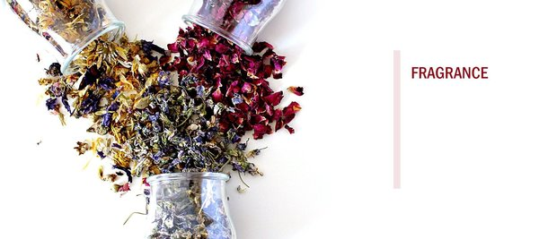

Fragrance
Fragrance is specific, individual and unique. Creating perfumes or fragrances is an art form based on science and knowledge, as well as an emotional analysis and response to the various chemical components that are blended to create a harmonious synergy.

Flavour
The chemical substances that contribute to the aromas of natural products — fruits, fruit juices and other foods — are varied. The Dutch TNO organisation regularly updates its Volatile Compounds in Food publication, which currently lists at least 7,000 different substances found in some 400 foodstuffs.